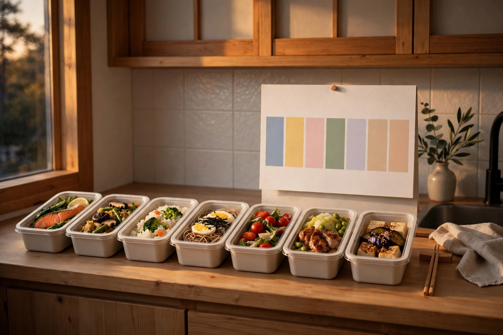

先に分岐を示す：任せる回数を決めるのが先、サービス選びはその後

週の夕食7回のうち、何回をサービスに任せるかで、残る献立決めの回数が決まります。全て自炊なら決める回数は7回、週3回を冷凍弁当とミールキットに任せれば4回、週5回任せれば2回です。サービスの比較は、この回数を決めた後でないと物差しが合いません。
2つの方式
| 方式 | 決め方 | 献立決定の回数 | 向く家庭 |
|---|---|---|---|
| 曜日固定 | 月・水・金は冷凍弁当、火・木はミールキット、と曜日で固定する | 週の初めに1回（例外の調整のみ） | 予定が読みやすい共働き世帯 |
| ローテーション | 2週間分の組み合わせを1組作り、繰り返す | 2週間に1回（組み合わせの見直し時） | メニューの偏りを避けたい世帯 |
混ぜた週の組み立て例
| 世帯 | 組み立て | 決める回数 | 週あたり食費の目安 |
|---|---|---|---|
| 共働き・子育て世帯 | 冷凍弁当3回＋ミールキット2回＋自炊2回 | 週5回→2回 | 単価の記録（記事1・記事2）の合計で算出 |
| 単身 | 冷凍弁当5回＋外食・自炊2回 | 週7回→2回 | 冷凍庫の空きが先に上限になる |
| 冷蔵作り置きを使う世帯 | 作り置き惣菜の配送1回で3日分＋自炊4回 | 週7回→4回 | 冷蔵のため保存日数が上限になる |
食費の目安は、このサイトの価格記録の単価を当てはめて出す形にしています。単価が更新されれば目安も変わるため、金額そのものは記録の表でご覧ください。
編集部の見方
全部を外注する形は、食費と冷凍庫の両方で続きにくい組み立てです。週のうち何回を任せるかが先で、サービスの選択はその後になります。任せる回数が週2〜3回なら、単価の差より「止めやすさと回数条件の軽さ」が効いてきます。
料金の根拠：冷凍弁当の1食単価の記録、ミールキットの総額と手間の出方（いずれも当サイト、確認日2026年11月26日）。この記事には広告を含みません。